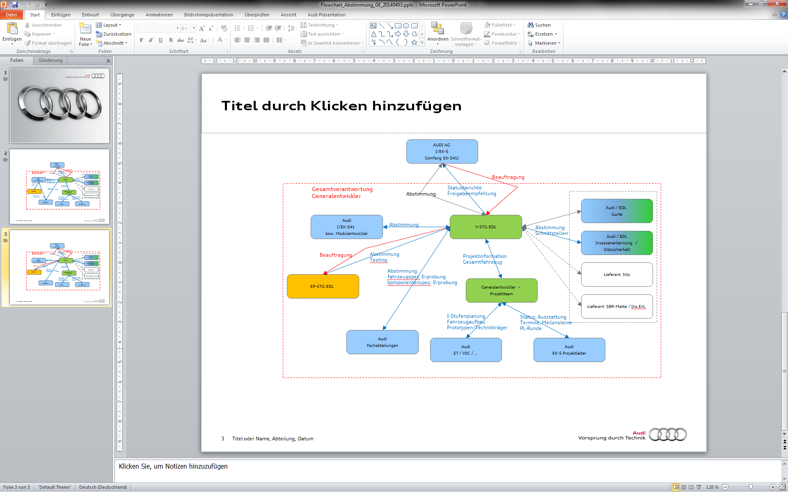
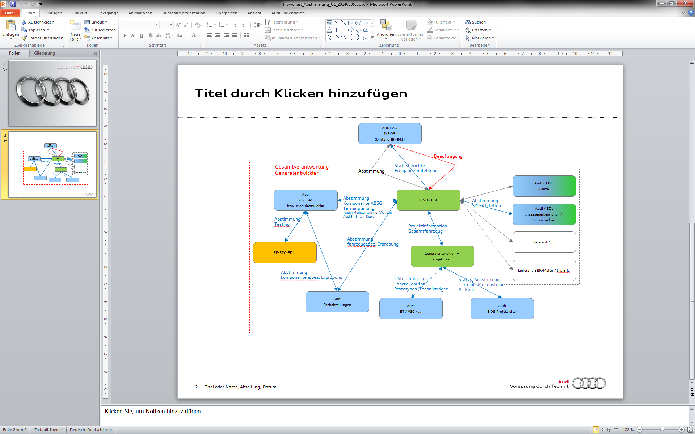

[redacted]
D[redacted]
Telefon: [redacted-phone]
Anfragelastenheft für Engineering-Leistungen
Sicherheitselektronik
[redacted-prj]
AU412/1EU_B (E5Avant),
LAH.85E.880.J
1.1 Bedeutung des Lastenhefts 5
2.1.2 Organisation, Leitung des Gewerks 8
2.2 Teil-Gewerk 1: Elektronikentwicklung 9
2.2.1 [redacted-person]-Varianten und Rollen im Projekt 9
2.2.2 Anforderungsmanagement in DOORS 9
2.2.3 Schnittstellen des Teil-Gewerks 11
2.3 Teil-Gewerk 2: [redacted]12
2.4 Teil-Gewerk 3: [redacted]12
2.5 Teil-Gewerk 4: [redacted-person] (ZDC) 13
2.6.2 Teil-Gewerk 1: Elektronikentwicklung 14
2.6.3 Teil-Gewerk 2: [redacted]19
2.6.4 Teil-Gewerk 3: [redacted]19
2.6.5 Teil-Gewerk 4: [redacted-person] (ZDC) 20
2.7.1 Q-Gate 1, Projektstart 20
2.7.2 Q-Gate 2, Prozessfähigkeit 20
2.7.3 Q-Gate 3, Serienfreigabe (SOP – 9 Monate) 20
2.7.4 Q-Gate 4, Projektabnahme (SOP + 1 Monat) 20
2.9 Leistungszeitraum und Leistungsumfang 21
2.9.1 Start, Ende des Projektes 21
2.9.2 Projekttermine, Leistungsumfang 21
2.11 Beistellungen der [redacted]21
3.1 Verantwortung, Informationspflichten und Zusammenarbeit 23
3.2 Durchführung der Arbeiten 23
3.6 Vergütung / Leistungsnachweis 25
3.8 Schutzrechtsrecherchen, [redacted-person] 27
3.9 Vertragslaufzeit und Kündigung 27
Lastenheft-Freigabe
| Datum | Ersteller [redacted-id] |
| [redacted-person] | [redacted-person] |
| Datum | Leiter [redacted-id] | Unterschrift |
| 15.3.2018 | [redacted-person] |
Mit dem vorliegenden Lastenheft werden die kaufmännischen und technischen Vorgaben beschrieben, unter denen der Bieter, an den die Anfrage ergeht (im Folgenden „Auftragnehmer“ genannt), ein Angebot für den jeweils angefragten Arbeitsumfang abgeben kann.
[redacted-person] beschreibt die betroffenen Schnittstellen, Prozesse, Rechte und die angeforderte Leistung als Grundlage für die Vergabe.
[redacted-person] muss dieses Lastenheft in vollem Umfang bei seiner Angebotsgestaltung berücksichtigen. In seinem Angebot hat er sämtliche Leistungen zu berücksichtigen, die zur Erfüllung des Lastenheftes erforderlich sind. [redacted-person] soll sich unbedingt und ausschließlich auf das Lastenheft beziehen und die darin enthaltene Leistungserbringung plausibel bewerten. Abweichungen zum Lastenheft sind im Angebot bzw. in den Bestellsystemen [redacted-co] unter Bezugnahme auf den jeweiligen Abschnitt ausdrücklich als solche zu kenntlich zu machen.
Wird der Auftrag an den Auftragnehmer vergeben, stellt dieser sicher, dass die im Lastenheft beschriebene Leistung vorgabegemäß gegenüber der [redacted-co] erbracht wird.
Die [redacted-co] behält sich das Recht vor, eine Kostenplausibilisierung vor der Beauftragung durchzuführen und entsprechend nachzuverhandeln. Die angebotenen Preise und Termine dürfen nicht überschritten werden. Im Angebot enthalten sind alle notwendigen Änderungen zur Erreichung der Zielsetzungen und Funktionserfüllung des Lastenheftes.
[redacted-person] des Lastenheftes ebenso wie die weiteren zur Verfügung gestellten Unterlagen unterliegen der Geheimhaltung und dürfen Dritten nur mit ausdrücklicher Genehmigung des zuständigen Fachbereiches der [redacted-co] zugänglich gemacht werden. Soweit eine Weitergabe an Dritte, insbesondere an mit dem Auftragnehmer verbundene Unternehmen, für die Erstellung eines Angebots erforderlich ist, hat der Auftragnehmer dafür Sorge zu tragen, dass die Vertraulichkeit sichergestellt ist.
[redacted-person] hat die strukturierte Anfrage [redacted-co] auszufüllen, also die geforderten Angaben zur Detaillierung und Plausibilisierung zu machen.
[redacted-person] der strukturierten Anfrage erstellt der Auftragnehmer kostenlos ein entsprechend strukturiertes Angebot. In diesem Angebot müssen alle Details zur Herleitung des Angebotswertes und zur Plausibilisierung enthalten sein. Dies umfasst insbesondere den prognostizierten Aufwand an Arbeitsstunden beim Auftragnehmer. Sollten seitens [redacted-co] weitere Details zum Angebot gefordert werden, wird der Auftragnehmer diese unverzüglich und kostenlos zur Verfügung zu stellen.
Das vorliegende Lastenheft bezieht sich ausschließlich Leistungen im Rahmen der Projektabläufe. Dies können u.[redacted-person], Konstruktions-, Berechnungs-, Prüfstands-, Versuchs-, Erprobungs-, Werkstatt- und Projektmanagementleistungen sein.
Art und Umfang der Leistung richten sich nach diesem Lastenheft, es sei denn, ein Sachverhalt wird individuell ausgehandelt und ausdrücklich schriftlich abweichend geregelt.
| Abkürzung |
|
|---|---|
| AB-SG |
|
| ASL |
|
| ASM |
|
| ATG |
|
| ATN |
|
| BT |
|
| CDR |
|
| COP |
|
| EDL |
|
| EDR |
|
| ELF |
|
| FGS |
|
| FLAH |
|
| FZ |
|
| GE |
|
| IS X |
|
| ISM |
|
| LAH |
|
| MS |
|
| OPL |
|
| SC / SC2 |
|
| SG-LF |
|
| SOP |
|
| TBD |
|
| ZDC |
|
Der ATN verantwortet die Konzept- und/oder Serienentwicklung des Airbag-Steuergeräts, der externen Sensoren (Druck- bzw. Beschleunigungssensoren und FGS-Druckschlauch) und des [redacted-person].
Im Rahmen dieser Entwicklungstätigkeiten muss der ATN folgende Umfänge leisten und folgende Anforderungen erfüllen.
Projektsteuerung für die oben genannten Komponenten (Meilensteinfestlegungen, Terminplanüberarbeitungen, Terminüberwachung und Eskalationsanstöße, Projektdokumentation im [redacted-person] Entwicklungsleitfaden (ELF), Vorbereitung von und Teilnahme an Gremienauftritten)
Durchführung von Projektbesprechungen (ggf. Telefonkonferenzen) zum Projektstatus. [redacted-person], und Dokumentation der Besprechung
[redacted-person] gegenüber dem ATG. [redacted-person] beinhaltet alle technischen, sowie organisatorischen Inhalte des Projektes. [redacted-person] auch über die Umfänge der Sicherheitselektronik hinaus
Vorbereitung von und Teilnahme an Gremienauftritten (inkl. ÄKO für Anpassungen)
Teilnahme am ISM und Tracking der Funktionsreifegrade (ISM42) – Bereitstellung der Information an [redacted-person] PLs
Teilnahme an Status- und Bauteilrunden für das Projekt bei [redacted-co]
Schnittstelle und Informationsträger zwischen Fahrzeugsicherheit und [redacted-co]
Abstimmung aller technischen Schnittstellen auf Komponentenebene mit den Funktions-, Bauteil- und Elektronikteams bei [redacted-person] bzw. innerhalb des ATN und den entsprechenden EE-Abteilungen des ATG
Abdeckung aller technischen Schnittstellen auf Fahrzeugebene innerhalb [redacted-co] und zum ATN
Abdeckung der Schnittstellen zum Plattform- und Modulentwickler
Erteilung der Freigabeempfehlungen für die P-, B-, BMG- und K-Freigaben
Durchführung bzw. Koordination aller relevanten Prüfungen der Bauteile (Detaillierung siehe Meilensteine). Fehler in den Prüfungen sind zu verifizieren und die Abstellung der Fehler ist mit dem Lieferanten zu klären. [redacted-person] der Prüfungen sind Teil der regelmäßigen Berichterstattung an [redacted-id] durch den ATN
Der ATN muss eine Funktionsfreigabeempfehlung für den [redacted-person] Recorder (EDR) erteilen und für NAR zusätzlich einen Selbstzertifizierungsbericht gemäß 49 CFR 563 und SAE J1698-3 erstellen
Der ATN muss eine Funktionsfreigabeempfehlung für den [redacted-person] Monitor ASM) erteilen
Der ATN muss die Verantwortung für die Erstellung und Freigabeempfehlung von Zieldatencontainern übernehmen
Der ATN muss mit einer Arbeitsumgebung (VAS/ODIS Tester, IDEX, Prüfbox, etc.) ausgerüstet sein, die sicherstellt, dass die notwendigen Arbeiten zielgerichtet bearbeitet werden können. [redacted-person] und Bereitstellung dieser Umgebung obliegt dem Auftragnehmer. [redacted-person] der Umgebung muss mit dem Auftraggeber erfolgen
Der ATN ist nicht Empfänger von Aufgaben (Datenanalyse, Variantenrechnungen, Büroarbeiten) aus der [redacted-co]-Fachabteilung.
Soweit notwendig können Teil-Gewerke an Dritte unterbeauftragt werden. Unabhängig hiervon verbleibt die volle Verantwortung beim ATN. [redacted-person] an Dritte sind im Angebot zu vermerken. [redacted-person] muss außerdem die Koordination und Steuerung der Dritten ausschließlich über den ATN erfolgen. Der ATN bleibt alleinige Schnittstelle zum ATG.
Dritte können
EDL ([redacted-person])
[redacted-person]-Entwickler
sein.
Rahmenbedingungen für die Gewerkumsetzung
Der ATN steuert, plant und leitet das Projekt und die Teil-Gewerke eigenständig und eigenverantwortlich.
Der ATN berichtet eigenständig und eigenverantwortlich den Status des Projektes an [redacted-person] und an die Projektbeteiligten.
Der ATN erstellt zu Beginn des Projektes einen Projektterminplan und teilt das Gewerk in Arbeitspakete auf. [redacted-person] ist terminlich und inhaltlich zu definieren.
Der ATN benennt einen Projektleiter für das Gewerk
Der ATN benennt je einen Projektleiter für die Teil-Gewerke.
[redacted-person] des Gewerkfortschritts sowie die Gewerkabnahme gemäß der geforderten Arbeitsergebnisse erfolgt durch den entsprechenden Gesamtgewerkprojektleiter beim ATG.
[redacted-person] des geforderten Gesamtergebnisses werden vom ATG Teil-Gewerke definiert, welche die einzelnen vordefinierten Entwicklungsprozesse, -umfänge näher beschreiben.
[redacted-person] und inhaltliche Abnahme von Teil-Gewerkergebnissen erfolgt mit dem Gesamtgewerkprojektleiter des ATG. [redacted-person] prozessualer Details der Teil-Gewerke erfolgt mit den Prozessprojektleitern des ATG.
Der ATN erhält auf [redacted-person] in die Inhalte der Prozessvorschriften, Normen und Arbeitsanweisung, welche im Rahmen des Gewerkes verbindlich einzuhalten sind. [redacted-person] werden nicht im Rahmen der Anfrage für das Gewerk in elektronischer Form bereitgestellt. Fordert der ATN keinen Einblick an, wird angenommen, dass dem ATN die Inhalte hinreichend bekannt sind.
[redacted-person] in diesem Gewerk umfasst alle elektronischen Komponenten deren Freigabe durch [redacted-id] erfolgt. Unter anderem sind das: Airbagsteuergerät bzw. [redacted-person] ([redacted-person] 2), die externen Sensoren (sowohl Druck- als auch Beschleunigungssensoren und FGS-Druckschlauch), und der Elektronikumfang des [redacted-person].
Je nach Projektphase gibt es unterschiedliche Gewerkumfänge, die durch den Auftragnehmer zu leisten sind. [redacted-person] ist vor Angebotsabgabe durch den Auftraggeber festzulegen.
Entwicklung bis Konzeptentscheid
Entwicklung ab Konzeptentscheid
Die unterschiedlichen Umfänge in den beiden Projektphasen sind aus dem Meilensteinplan ersichtlich.
Je nach Variantenentwicklung gibt es unterschiedliche Gewerkumfänge die durch den Auftragnehmer zu leisten sind. Im Rahmen dieser Anfrage gilt Variante (2).
Variantenentwicklung durch GE
Sicherheitselektronik als Modulentwicklung mit einer Variante die nur
vom Auftragnehmer in dem relevanten Fahrzeugprojekt genutzt
wird.
[redacted-person] ist durch den GE in Abstimmung mit dem Modulentwickler zu entwickeln und auf Komponentenebene freizugeben. [redacted-person] sind sowohl die fahrzeugrelevanten als auch die bauteilrelevanten Umfänge zu berücksichtigen. [FZ, BT]
Der ATN deckt alle Schnittstellen zum Lieferanten der Komponenten ab.
Für die Laborprüfungen des Bauteils ist im Rahmen der Entwicklung ein automatisches Testsystem notwendig, welches alle Fehlerzustände und normalen Zustände der externen Schnittstellen simulieren kann und die notwendige Systemreaktion (z.[redacted-person], Messwerteblöcke und Warnlampenstatus) abprüft. Hier sind auch die Spannungsverläufe gemäß Testprüfspezifikation von [redacted-id] zu integrieren und die Systemreaktion abzuprüfen.
Variantenentwicklung durch Modulentwickler
Sicherheitselektronik als Modulentwicklung durch [redacted]mit einer
Variante die in anderen Fahrzeugprojekten im Konzern genutzt
wird.
[redacted-person] ist durch den GE beim Modulentwickler einzusteuern und durch den Modulentwickler freizugeben.
Bei der Kommunikation von und zum Modulentwickler ist [redacted-person] immer einzubinden, wenn der Modulentwickler nicht gleichzeitig der ATG ist. [redacted-person] sind nur die fahrzeugrelevanten Umfänge zu berücksichtigen [FZ].
Der ATN beschafft und bewertet für das Projekt relevante Informationen aus dem Basisprojekt und stellt diese Informationen innerhalb der Organisation des ATN zur Verfügung
Der ATN deckt die entsprechenden Schnittstellen zum Plattform- und Modulentwickler ab.
Der ATN nimmt an Bauteilrunden aus dem Basisprojekt teil.
Bearbeitung, Review FLAHs in DOORS
[redacted-person] DOORS-Module mit dem Lieferanten des Airbag-Steuergerätes
[redacted-person] DOORS-Module mit Partnersteuergeräten über die jeweiligen Fachabteilungen [redacted]
Ist der ATN nicht mit der Entwicklung des im Projekt verwendeten Airbagsteuergerätes beauftragt, muss der ATN die Umsetzung und Dokumentation der projektspezifischen Anforderungen durch die verantwortliche Fachabteilung [redacted]sicherstellen. Hierzu sind die projektspezifischen Anforderungen zu definieren, ab zu stimmen und die Umsetzung der Anforderungen in DOORS zu kontrollieren.
[redacted-person] für die bauteilspezifischen Umfänge bzw. für die Testumfänge ist bei fehlendem Know-How möglich. [redacted-person] ist mit dem ATG vor Vergabe abzustimmen. [redacted-person] der Unterbeauftragung obliegt dem ATN.


[redacted-person] muss die [redacted](EDR) gemäß der geltenden Gesetzesanforderungen umgesetzt und freigegeben werden (z.B. 49 CFR 563). Umfang des Teilgewerks ist die Einführung des EDR für das Fahrzeugprojekt und die Selbstzertifizierung gemäß 49 CFR 563 und geltender Standards zum Nachweis der gesetzeskonformen Freigabe der Funktion EDR und des CDR-Tools.
AP1: Anpassungsentwicklung CDR-Tool
- Anforderungsmanagement
Terminplanung und –überwachung
Fehlermanagement
Entwicklungsunterstützung für den [redacted-person] Diagnostics
Koordination der Schnittstelle zwischen [redacted-co] TE, Steuergerätlieferanten und Toolhersteller
Koordination von Musterlieferungen
- falls erforderlich: Verwaltung und Bereitstellung der
EDR-Datendefinition für den Toolhersteller (auf
Basis der SG-Spezifikation)
Kommunikation mit dem Toolhersteller erfordert verhandlungssichere Englischkenntnisse
AP2: Freigabetests CDR-Tool
Prüfung der Musterstände des CDR-Tools
Koordination der Fehlerbehebung mit dem Toolhersteller
Dokumentation der Testergebnisse
Erstellung einer fahrzeugspezifischen Freigabeempfehlung für das CDR-Tool
AP3: Selbstzertifizierung EDR
Koordination, Auswertung und Dokumentation der EDR-Tests im Crashprogramm
Crashauswertung bzgl. der Funktion gemäß der [redacted-person] Procedure
- Koordination, Auswertung und Dokumentation von zusätzlichen Tests am Prüfstand AFP in Abstimmung
mit dem für den Prüfstand nominierten Projektpartner
- Erstellung der Selbstzertifizierungsunterlagen gemäß 49 CFR 563 und SAE J1698-3 [redacted-person]
Procedure
- Erstellung der Zertifizierungsunterlagen erfordert verhandlungssichere Englischkenntnisse
AP4: [redacted-person] CDR-Tool / EDR-Zertifizierung
Betreuung bei Auffälligkeiten bei den jeweiligen Fachabteilungen
- Erstellung von fahrzeugspezifischen Trainingsunterlagen / Dokumentationen für die Anwender des
CDR-Tools (Zugang zum Steuergerät, Einsatz des Tools im jeweiligen Fahrzeug, Methodik zum EDR-
Auslesen bei starker Schädigung des Fahrzeugs)
[redacted-person] beinhaltet die Funktionsentwicklung, Integration und Freigabeempfehlung für die [redacted](ASM) im angefragten Fahrzeugprojekt.
[redacted-person] müssen durch den ATN eigenständig bearbeitet werden:
Falls erforderlich: [redacted-person] / Erweiterung der ASM-Anforderungen und –Datendefinitionen
Systemerprobung am vernetzten Prüfstand
Fahrzeugerprobung der Funktion
Freigabeempfehlung zur Funktionsfreigabe ASM
Freigabeempfehlung für das ASM-Auslesetool
[redacted-person] sind im Querschnittslastenheft ASM und im Bauteillastenheft des SC2 beschrieben. [redacted-person] ASM kann in Abstimmung mit dem ATG an einen erfahrenen Unterauftragnehmer beauftragt werden.
[redacted-person] beinhaltet die Erstellung, den Test und die Freigabeempfehlung für die im Projekt notwendigen Zieldatencontainer (ZDC).
[redacted-person] müssen durch den ATN eigenständig bearbeitet werden:
Befüllung und Abstimmung der Freigabetabelle für die Bestellung der Parametersätze beim Lieferanten
Ermittlung und Abstimmung der notwendigen Kodierinformationen und deren PR-Nummern-Steuerung mit den beteiligten Fachbereichen
Tracking der ZDC-Bereitstellungstermine nach Arbeitsanweisung AA.12.02 und Anstoß von Eskalationen
Erstellung der Zieldatencontainer in System42 (S42)
Test und Review der erstellten ZDCs bei und mit den beteiligten Fachabteilungen (Absicherungstests für Serien-ZDCs am Prüfstand bei Fa. ASTech)
Verteilung der aktuellen Zieldatencontainer an entwickelnde Fachbereiche (über CP-Tool) und Produktion sowie Sicherstellung der Aktualität von bestehenden ZDCs (z.[redacted-person] PR-Nummern, Anläufe, …)
Freigabe der Zieldatencontainer und Bedienung der Gremien (u.[redacted-person] Team)
Der ATN legt bei Angebotsabgabe die geplanten Projektleiter von Gesamt-Gewerk und der Teil-Gewerke fest. [redacted-person] der Verantwortlichkeiten muss dem Auftraggeber spätestens 2 Monate vor Verantwortungswechsel mitgeteilt werden. Der ATN muss eine ausreichende Übergabezeit einplanen.
[redacted-person] sind in Monaten vor bzw. nach SOP
angegeben
(SOP – x Monate bzw. SOP + x Monate).
Es ist jeweils die maximale Laufzeit der Projekte
referenziert.
Die gültigen konkreten Meilensteine und Anlauftermine sind dem
jeweiligen Projektterminplan zu entnehmen.
Zu Projektbeginn sowie regelmäßig zu berichtenden Arbeitsergebnisse:
[redacted-person]-Gewerk
[redacted-person]-Gewerke und Arbeitspakete
[redacted-person] Elektronik sind die Erstellung des [redacted-person] zum Meilenstein KE und die Freigabeempfehlung des ATN für das Airbagelektroniksystem im Fahrzeug zum [redacted-person].
Beinhaltet das Gesamtgewerk die Entwicklung einer Plattform, für welche [redacted-co] verantwortlich ist ([redacted-co]-Plattform), müssen die entsprechenden Plattform-Meilensteine eingehalten werden.
[redacted-person] des Teil-Gewerks erfolgt zu folgenden Meilensteinen. Zu jedem Meilenstein stellt der ATN die Arbeitsergebnisse dar, liefert diese aus und holt die Freigabe von [redacted-person] ein.
Je Meilenstein und Funktion muss die Erfüllung der Entwicklungsumfänge bis zu diesem [redacted-person]. Zusätzlich müssen die ggf. erforderlichen Dokumentationsumfänge geliefert werden.
| Meilenstein | ||
|---|---|---|
| Projektphase bis KE | ||
| 1ster Funktionsfreeze „Konzept“ | -40 | Anfragevarianten (Min- und Max-Variante) anhand Spezifikationsliste abgeglichen und im [redacted-person] Projektforum verabschiedet. |
| [redacted-person] an Einkauf | -40 | Bauteil-Lastenhefte sind erstellt und mit Partnerabteilungen abgestimmt |
| Auswahl der Vergabevariante | -37 | Vergabevariante anhand Spezifikationsliste abgeglichen und im [redacted-person] Projektforum verabschiedet |
| Konzeptentscheid | -33 | Entscheidung des Fahrzeugkonzepts |
| Projektphase ab KE | ||
| ASL Stückliste für PT gefüllt | -32 | |
| IS1 im Fahrzeug | -29 | Freigabeempfehlung für Entwicklungsumfang im Fahrzeug |
| P-Freigabe | -27 | Freigabeempfehlung P-Freigabe |
| IS2 im Fahrzeug | -25 | Freigabeempfehlung für Entwicklungsumfang im Fahrzeug |
| Zeichnungsdaten archiviert | -22 | Zeichnungsdaten vom Lieferanten überprüft und in KVS archiviert |
| Stückliste gefüllt | -22 | |
| IS3 im Fahrzeug | -21 | Freigabeempfehlung für Entwicklungsumfang im Fahrzeug |
| B-Freigabe | -18 | Freigabeempfehlung B-Freigabe |
| IS4 im Fahrzeug | -17 | Freigabeempfehlung für Entwicklungsumfang im Fahrzeug |
| IS5 im Fahrzeug | -12 | Freigabeempfehlung für Entwicklungsumfang im Fahrzeug |
| 100% Software | -12 | Bestätigung dass Softwareumfang komplett umgesetzt wurde |
| Software-Freigabe | -5 | Bestätigung, dass Software freigabefähig für Kunde ist |
| Baumusterfreigabe und K-Freigabe | -4 | Freigabeempfehlung für Bauteile zum SOP; Begehren in AVON erstellt |
| NAR, China | +6 | Freigabeempfehlung für Folgeanlauf |
| PHEV/Motorderivate S/RS | +12 | Freigabeempfehlung für Folgeanlauf |
Aufgabenbeschreibung der Meilensteine
Abhängig von der Variantenentwicklung sind hier nur die fahrzeugbezogenen Punkte [FZ] zu berücksichtigen (Variantenentwicklung durch Modulentwickler) oder fahrzeug- und bauteilbezogene Punkte [FZ, BT] zu berücksichtigen (Variantenentwicklung durch GE).
[redacted-person] sind durch den ATN durchzuführen:
1ster Funktionsfreeze
[FZ] Darstellung aller möglichen Varianten sowie je eine mögliche Min- [redacted-person] für das Fahrzeugprojekt anhand der Fahrzeugspezifikationen
[FZ] Vorlage einer abgestimmten E/E-Sicherheitselektronikarchitektur
[FZ] Vorlage der erstellten Funktionsliste
[FZ] Definition der HW- und SW-Vorhalte
[FZ] Festlegung der möglichen Sensorkonfigurationen für das Fahrzeugprojekt
[FZ] Bestätigung der möglichen Varianten im [redacted-person]-Forum
[redacted-person] an Einkauf
[FZ] Auswahl, ob die Umfänge durch eine Variante des Modulentwicklers abgedeckt werden kann, oder ob eine eigene Variante notwendig werden könnte.
[BT] Anpassung der Lastenhefte für die Sicherheitselektronik-Systeme einschließlich aller Anlagen in Abstimmung mit dem freigabeverantwortlichen Projekt-Ingenieur bei [redacted-id] auf das jeweilige Projekt.
[BT] Übergabe der Vergabelastenhefte an den Einkauf zum Start des [redacted-person]
Auswahl der Vergabevariante
[FZ] [redacted-person] der Auslösestrategie und Art der Auslösungen der Aktuatoren
[FZ] Darstellung aller notwendigen Varianten für das Fahrzeugprojekt anhand der Fahrzeugspezifikationen
[FZ] Vorlage der erstellten und abgestimmten Funktionsliste
[FZ] Festlegung der Sensorkonfigurationen für das Fahrzeugprojekt
[FZ] Konkretisierung der HW- und SW-Vorhalte
[FZ] Bestätigung der Vergabevarianten im [redacted-person]-Forum
[FZ] Auswahl, ob die Umfänge durch eine Variante des Modulentwicklers abgedeckt werden kann, oder ob eine eigene Variante notwendig wird.
[BT] Finalisierung der offenen Umfänge in den Vergabelastenheften und Freigabe des Lastenhefts zur Übergabe an den Einkauf zur finalen Vergabe des Bauteils
[FZ] Abstimmung der produktionsrelevanten Tests mit PG-E und Berücksichtigung dieser in der weiteren Entwicklung (Optimierung auf minimale F-Zeit/-Aufwand)
[FZ] Prüfung der Verbaubarkeit des Sicherheitselektronik-Konzepts direkt mit PG-E an der Linie
Konzeptentscheid
ASL Stückliste für PT gefüllt bzw. Stückliste gefüllt
[FZ] Stücklistenpflege, für die ersten Konzeptfahrzeuge bzw. Technikträger
[FZ] Stücklistenpflege für alle Sicherheitskomponenten für den Prototypen im System AVX
[FZ] Stücklistenpflege für alle Sicherheitskomponenten für die Serie im System AVON.
Zeichnungsdaten archiviert
[BT] Steuerung, Verifikation und Freigabe der Zeichnungen und notwendigen Anpassungen
P-Freigabe
[FZ] [redacted-person] sind archiviert und das Bauraummodell ist im Fahrzeug ohne Kollision
[FZ] Die P-Freigabe wird im System AVON erteilt
IS x im Fahrzeug (bzw. zu jedem Bauteil-Musterstand),
[FZ] Definition der Funktionshübe zu den jeweiligen Integrationsstufen (evtl. in Abhängigkeit mit dem Modulentwickler)
[FZ] Steuerung und Review der Systemschaltpläne.
[FZ] [redacted-person]- und Prüfanweisungen
[BT] [redacted-person]-Datenblätter
[FZ] Erstellung und Verifikation der Freigabetabelle und der Zieldatencontainer zu den einzelnen Integrationsstufen und der Serie.
[FZ] Ist eine Erstellung und Verifizierung der Zieldatencontainer hauseigen nicht möglich muss der ATN die notwendigen Zieldatencontainer-Umfänge unterbeauftragen
[FZ] Pflege und Freigabe der Varianten und Versionen im System42
[FZ] Aufbaukoordination und Begleitung von Erprobungsfahrzeugen unter für Sicherheitselektronik relevanten Gesichtspunkten (z.[redacted-person] für SC und RGS)
[FZ] Planung, Beschaffung und Verwaltung sämtlicher Versuchsteile, welche in der Verantwortung von [redacted-person] liegen. Hierzu zählen unter anderem Airbagsteuergeräte, externe Airbag-Sensoren, SBR-Matte und BodySense-Steuergeräte als auch [redacted-person].
[FZ] [redacted-person] bzgl. Funktion und Teilestände der Sicherheitskomponenten
Fahrzeugunabhängige, durchzuführende Komponentenprüfungen:
[BT] [redacted-person]
[BT] Diagnoseprüfung im Labor und im Fahrzeug
[FZ] [redacted-person] der fahrzeugunabhängigen, durchzuführenden Prüfungen sind durch den ATN vom Modulentwickler zu beziehen und sind Teil der regelmäßigen Berichterstattung durch den ATN.
Fahrzeugunabhängige, zu organisierende Komponentenprüfungen:
[BT] Komponentenerprobung nach LAH (Dauererprobung)
[BT] Kommunikationsprüfung
[BT] [redacted-person]
[BT] Gesamtfahrzeug-HIL Tests in Abstimmung mit [redacted-id]
[BT] Software/Datenfreigabe inklusive Überprüfung der Ergebnisse
[FZ] [redacted-person] der fahrzeugunabhängigen, zu organisierenden Prüfungen sind durch den ATN vom Modulentwickler zu beziehen und sind Teil der regelmäßigen Berichterstattung durch den ATN.
Fahrzeug-bezogene, zu organisierende Prüfungen:
[FZ] Referenzfahrzeuguntersuchung
[FZ] Verbauprüfung (VBV)
B-Freigabe
[FZ] [redacted-person] sind archiviert und das Bauraummodell ist im Fahrzeug ohne Kollision
[FZ] Die B-Freigabe wird im System AVON erteilt
100% Software
[redacted-person] ist wie der Meilenstein „IS x im Fahrzeug“ zu behandeln.
[FZ, BT] Es ist sicherzustellen, dass alle Software zu 100% umgesetzt ist. Fehler dürfen vorhanden sein.
Software-Freigabe
[redacted-person] gilt als erreicht, wenn der Lieferant seine Freigabe erteilt hat und anschließend die finale Softwarefreigabe durch den verantwortlichen [redacted-id] Mitarbeiter ausgesprochen wird. Durch den ATN ist eine SW-Freigabeempfehlung unterschrieben vorzulegen.
[redacted-person] für die Softwarefreigabe sind folgende Umfänge:
Fachbereichs-Anforderungen sind abgestimmt und freigegeben [ggf. Unterfreigabe nach
Prüfung gegen Lieferantenaussage]
[redacted-person] vom Bauteillieferanten ist erteilt und liegt dem V-STG und dem V-SW vor
[redacted-person] (Flashen, Diagnose, Komponentenschutz, Vernetzung) sind durch die EE-Querschnittsabteilungen getestet und freigegeben. [redacted-person] der Prüforte wird über den aktuellsten Entwicklungsleitfaden sichergestellt
[redacted-person] beim Erstanläufer ist durchgeführt und freigegeben
Der EG-Dauerlauf und die EE-Breitenerprobung sind für den Erstanläufer durchgeführt
Die im Projekt abgestimmten Labor-Prüfungen auf Bauteilebene sind durchgeführt und die ent-
sprechenden Freigabeempfehlungen der funktionsverantwortlichen Abteilungen liegen vor
[redacted-person] [z.[redacted-person]] durch den V-Fusi für die SW-relevanten Umfänge der Funktionalen
Sicherheit liegt vor
Alle anlaufrelevanten KPM-[redacted-person] mit Prio A1, A und B sind abgearbeitet und auf den freizugebenden Anlauf bezogene, offene Prio C Tickets wurden vom jeweiligen Funktionsverantwortlichen geprüft und als nicht-anlaufverhindernd eingestuft [Email oder KPM-[redacted-person] des Funktionsverantwortlichen unter Angabe der Ticketnummer ist ausreichend für die Freigabe]
Auflagen, die beim Einsatz der SW berücksichtigt werden müssen, müssen in der SW-Freigabe dokumentiert werden
[redacted-person] „nicht-parametersatzabhängigen“ Umfänge müssen als i.[redacted-person] werden.
[redacted-person] interne Prüfung der freizugebenden Software muss durchgeführt und dokumentiert
werden. Für die Softwarefreigabe ist die aktuellste
Softwarefreigabecheckliste zu
verwenden.
[redacted-person] bei der Erfüllung der jeweiligen Punkte der Softwarefreigabecheckliste ist der
aktuellste Entwicklungsleitfaden [redacted-id] zu verwenden.
Baumusterfreigabe
[redacted-person] ist wie der Meilenstein „IS x im Fahrzeug“ zu behandeln.
[FZ, BT] Es ist sicherzustellen, dass alle Software zu 100% umgesetzt ist. Es ist sicherzustellen, dass keine Fehler vorhanden sind.
[BT] [redacted-person] und Testfälle beim Lieferanten für die Delta-Umfänge zum Grundmodul.
Zusätzliche fahrzeugunabhängige zu organisierende Komponentenprüfungen:
[BT] Überprüfung von Sicherheitsfunktionen mittels FMEA
[BT] Prüfung der HW-Schnittstellen (CAN, LIN, FXR)
[BT] [redacted-person] der Aufbautechnik
[BT] Review und Freigabe des Pflichtenhefts vom Bauteil-Lieferanten.
[BT] Der ATN erarbeitet die Gesamtfreigabeempfehlung für die Sicherheitselektronik. Basis für die Freigabeempfehlung sind die entsprechenden Komponentenprüfungen.
[redacted-person] für die Sicherheitselektronik hat [redacted]der Freigabeempfehlung durch den ATN kann der Freigabeverantwortliche von [redacted-id] die jeweiligen Freigaben erteilen.
K-Freigabe
[FZ] [redacted-person] ist vom Bauteilverantwortlichen (GE oder Modulentwickler) einzuholen
[FZ] Erstellung und Freigabe der PDM- und TLD-Blätter
[redacted-person]-bezogene zu organisierende Prüfungen
[FZ] Prüfung EMV im Fahrzeug
[FZ] EDR Tests im Rahmen der Crasherprobung
[FZ] Sommer- und Winterfahrteinsatz, inklusive Überprüfung der Ergebnisse
[FZ] Dauerlaufeinsatz im Fahrzeug, inklusive Überprüfung der Ergebnisse
[FZ] Der ATN erarbeitet die Gesamtfreigabeempfehlung für die Sicherheitselektronik. Basis für die Freigabeempfehlung sind die BMG und die fahrzeugbezogenen Prüfungen.
[FZ] [redacted-person] deckt sowohl die Komponenten der Sicherheitselektronik sowie deren Integration ins Gesamtfahrzeug ab.
[redacted-person] für die Sicherheitselektronik hat [redacted]der Freigabeempfehlung durch den ATN kann der Freigabeverantwortliche von [redacted-id] die jeweiligen Freigaben erteilen.
NAR, China, PHEV, Motorderivate S/RS
[FZ] Freigabeempfehlung für Folgeanläufe
[FZ] Verifikation dass die entsprechende Variante auch für die jeweiligen Derivate freigegeben werden kann. Dafür sind die entsprechenden fahrzeugrelevanten Freigabepunkte analog BMG bzw. K-Freigabe zu erfüllen.
[redacted-person] zum Projektfortschritt
[redacted-person] des CDR-Tools (zur US-Markteinführung des Fahrzeugs)
[redacted-person] für das CDR-Tool (zur US-Markteinführung des Fahrzeugs)
[redacted-person] für jedes Fahrzeugprojekt (6 Wochen vor relevantem Anlauftermin)
Freigabeempfehlung für die Funktion EDR und das CDR-Tool auf Basis des NAR Crashversuchs-programms (6 Wochen vor relevantem Anlauftermin)
Trainingsunterlagen / Dokumentationen für die Anwender des CDR-Tools
[redacted-person] zum Projektfortschritt (inkl. Fehlerliste, Arbeitspunkte, Terminplanung SW-Stände, Erprobungsstatus)
Falls erforderlich: Neue/erweiterte ASM-Datendefinitionen für betroffenen ASM-Sendersteuergeräte
RainCoat-Auswertungen der Breitenerprobungsfahrzeug des Fahrzeugprojekts
Freigabeempfehlung für die Funktion ASM auf Basis folgender Unterfreigaben (xx Wochen vor relevantem Anlauftermin):
Unterfreigaben der Komponenten des ASM-Systems (nur Koordination durch Gewerk, Unterfreigabe durch Fachabteilungen)
[redacted-person]
[redacted-person]
Unterfreigabe RainCoat-Auswertung ASM
Falls erforderlich: [redacted-person] (GG-8) für neue / erweiterte ASM-Datenumfänge
Falls erforderlich: Erweiterter ASM-Parser zur Interpretation der ausgelesenen ASM-Daten
Falls erforderlich: Freigabeempfehlung für den ASM-Parser
[redacted-person] zum Projektfortschritt
[redacted-person] der notwendigen ZDCs
[redacted-person] für Serien-ZDCs
Dokumentationen der Aktivitäten über offene [redacted-person] (OPLs)
[redacted-person] nach Beauftragung stellt der ATN folgende Umfänge zur Abnahme durch den ATG vor.
Gesamtprojektplanung der Umfänge [redacted-id]
Detailplanung der beauftragten Entwicklungsumfänge
Liste der geplanten Dokumentationen, Freigabe-Dokumente, Arbeitsergebnisse inklusive Termin zur Bereitstellung
Darstellung der Umsetzung der Prozessvorgaben und Standards, welche von [redacted-id] bereitgestellt wurden.
Der ATN muss die Abnahme schriftlich vom Qualitätssicherungsbeauftragten [redacted-id] bestätigten lassen.
Darstellung der projektspezifischen Umfänge je Entwicklungsumfang
[redacted-person] nach Beauftragung oder nach Vereinbarung mit [redacted-id] entsprechend der Projekterfordernisse muss der ATN anhand vom ATG vorgegebener Beispielanwendungen seine Prozessfähigkeit zu folgenden Entwicklungstätigkeiten nachweisen.
Abstimmung und Freigabe einer Applikation
Durchführung von Crashsimulationen und Referenzapplikationen
Änderung, Bearbeitung von Lastenheften
9 Monate vor SOP stellt der ATN folgende Umfänge zur Abnahme durch den ATG vor.
Detailplanung der beauftragten Entwicklungsumfänge
Arbeitsprodukte aus der Umsetzung der Prozessvorgaben und Standards, welche von [redacted-id] bereitgestellt wurden
Der ATN muss die Abnahme schriftlich vom Qualitätssicherungsbeauftragten [redacted-id] bestätigten lassen
Spätestens 1 Monat nach SOP stellt der ATN folgende Umfänge zur Abnahme durch den ATG vor.
Auslieferung sämtlicher Dokumente, Daten, welche im Rahmen des [redacted]erzeugt wurden, insbesondere Freigabe-Dokumentationen
[redacted-person] der Arbeitsprodukte aus der Umsetzung der Prozessvorgaben und Standards, welche von [redacted-id] bereitgestellt wurden
Der ATN muss die Abnahme schriftlich vom Qualitätssicherungsbeauftragten [redacted-id] bestätigten lassen
[redacted-person] gewährleistet, dass er die zur Abarbeitung des Umfangs erforderlichen Fachkenntnisse hat. Hierzu zählen aus Sicht der [redacted-co] insbesondere:
Konstruktion, DMU
Elektronikentwicklung und Projektsteuerungserfahrung
Bei fristgerechter Beauftragung und Leistungserbringung
Projektstart: wird durch die [redacted-person]-Gewerk-Anfrage vorgegeben
Projektende: 3 Monate nach letztem SOP in der Anlaufstaffelung
Die genauen Termine werden über die Gesamt-Gewerk-Anfrage
vorgegeben.
[redacted-person] sind zu den unter 2.5 [redacted-person] genannten vom SOP abhängigen Meilensteinen zu erbringen.
Erfolgt eine Beauftragung in einem bereits laufenden Projekt und sind somit einige der referenzierten Meilensteine bereits verstrichen, so sind nur noch die bevorstehenden Meilensteine anzubieten.
Bei der Projektplanung sind Verschiebungen der bei Anfrage genannten Projekttermine von bis zu +6 Monaten einzukalkulieren. [redacted-person] müssen ohne Neubewertung des Umfangs innerhalb des Gewerkangebots abgedeckt sein.
Bei darüber hinausgehenden Terminverschiebungen sind die entstehenden Delta-Umfänge in einem separaten Angebot auszuweisen.
Es müssen die Teilgewerke für die Projekte und deren Derivate entsprechend
angeboten werden. In Tabelle 1 sind die voraussichtlichen SOPs der Projekte angegeben, welche Grundlage für das Angebot sind. Die aktuellen Anläufe jedes Derivats sind jedoch der zum Zeitpunkt der Anfrage gültigen Anlaufstaffelung zu entnehmen.
| Baureihe | Derivat Generation |
Markt | SOP |
|---|---|---|---|
| E5 | AU412 | RdW | 2022 |
[redacted-person] muss am [redacted-person] erbracht werden. Teilumfänge ohne direkten Bezug, Einbindung des ATG und ohne Kommunikationsbedarf mit dem ATG können an beliebigen Standorten erbracht werden.
[redacted-person] an Tochtergesellschaften der [redacted-co] oder des [redacted-co]Konzerns müssen die notwendigen Systemzugänge, Benutzer, etc. aller unterbeauftragter Projektbeteiligten soweit möglich über die Tochtergesellschaft beantragt, eingerichtet und die Kosten vom ATN getragen werden. [redacted-person] sind in diesem Fall im Angebot zu berücksichtigen und separat auszuweisen.
Der ATN muss im Rahmen des Gewerkes anfallende Lizenzkosten für Software-Werkzeuge tragen, im Angebot berücksichtigen und separat ausweisen.
Zugriffsberechtigungen auf erforderliche Systeme zur Ablage von Projektunterlagen ([redacted-co]dox, JIRA, KPMWeb, …) sind durch den ATN zu beantragen und die entstehenden Kosten zu tragen.
Anfragen zur Abstimmung von Angebotsinhalten für das Gesamt-Gewerk richten Sie bitte an
[redacted-person] ([redacted-id])
[redacted-email]
Tel.: [redacted-phone]
[redacted-person]-Gewerk 2 [redacted]
[redacted-person] ([redacted-id])
[redacted-email]
Tel.: [redacted-phone]
[redacted-person]-Gewerk 3 [redacted-person] Monitor
Tbd.
[redacted-person] für die Teil-Gewerke und spezifische Themen im Rahmen des Gewerks werden, soweit erforderlich, nach Vergabe benannt.
[redacted-person] erbringt seine Leistung selbständig, eigenverantwortlich und ausschließlich mit eigenem qualifiziertem Personal. [redacted-person] erbringt seine Leistungen gemäß dem neuesten Stand von Wissenschaft und Technik und nach den Grundsätzen ordnungsgemäßer Berufsausübung einschließlich der Dokumentation. Etwaige technische, fachliche oder sonstige Vorgaben [redacted-co] entbinden den Auftragnehmer nicht von seiner Verpflichtung und Verantwortung für eine fehlerfreie Erbringung seiner Leistungen.
[redacted-person] wird die Informationen, Unterlagen, projektbezogene Anweisungen, Anforderungen und ähnliche Vorgaben der [redacted-co] inhaltlich auf Vollständigkeit, [redacted-person] und Umsetzbarkeit hin überprüfen. [redacted-person] wird der Auftragnehmer gegenüber [redacted-co] unverzüglich schriftlich mit Begründung anzeigen.
[redacted]wird der Auftragnehmer schriftliche und aussagekräftige Statusberichte verfassen.
Die [redacted-co] wird dem Auftragnehmer die erforderlichen Informationen und Unterlagen nach Aufforderung zur Verfügung stellen. Darüber hinausgehende Mitwirkungsleistungen bedürfen einer gesonderten schriftlichen Vereinbarung.
Soweit der Auftragnehmer zur Erledigung der [redacted-person] zu [redacted-co] IT-Systemen benötigt und die [redacted-co] diese Geräte nicht beistellt oder vermietet, wird der Auftragnehmer seine entsprechenden Geräte (Laptops etc.) [redacted-co] zur Installation der erforderlichen Software zur Verfügung stellen. [redacted-person] wird der Auftragnehmer diese Geräte erneut [redacted-co] zum Zweck der Datensicherung und -entfernung zur Verfügung stellen.
Werden von [redacted-co] insbesondere aus [redacted-person] zur Verfügung gestellt, so bleiben diese sowie alle gegebenenfalls darauf gespeicherte Daten, Software etc. alleiniges Eigentum [redacted]sind ausschließlich für Zwecke des beauftragten Arbeitsumfangs zu verwenden.
[redacted-person] ist für die Projektplanung und Leistungsdurchführung selbst verantwortlich. Sollten für den [redacted-person] seitens [redacted-co] angegeben werden, so sind dies lediglich Schätzungen, die auf Erfahrungswerten basieren.
[redacted-person] erbringt seine Leistung in regelmäßiger fachlicher Abstimmung mit [redacted-co] und benennt einen Projektleiter, der den Einsatz des Personals und die Erstellung des Gewerkes plant bzw. überwacht. [redacted-person] ist der verantwortliche Ansprechpartner für die [redacted-co] in Bezug auf sämtliche Belange des Projektes. [redacted-person] gegenüber kann die [redacted-co] Erklärungen mit Wirkung für den Auftragnehmer abgeben.
Die vom Auftragnehmer eingesetzten Mitarbeiter unterliegen alleine dem Weisungsrecht des Auftragnehmers. [redacted-person] stellt sicher, dass das Weisungsrecht ausschließlich durch ihn ausgeübt wird. Die vom Auftragnehmer eingesetzten Personen treten in kein Arbeitsverhältnis zur [redacted-co], auch soweit sie Leistungen auf deren Betriebsflächen erbringen.
Wird eine vom Auftragnehmer zur Vertragserfüllung eingesetzte Person durch eine andere ersetzt oder ist generell eine Einarbeitung in den Auftrag (z. [redacted-person] zu für die Abarbeitung des Auftrags zwingend erforderlichen [redacted-co] IT-Systemen) erforderlich, so gehen die Kosten einer solchen Einarbeitung zu Lasten des Auftragnehmers. Bei der Auswahl wird der Auftragnehmer die Interessen [redacted-co] angemessen berücksichtigen. Die [redacted-co] kann mit Begründung den Austausch von vom Auftragnehmer zur Vertragserfüllung eingesetzten Personen verlangen, wenn diese wiederholt gegen vertragliche Pflichten verstoßen haben. Die durch den Austausch entstehenden Kosten gehen zu Lasten des Auftragnehmers.
[redacted-person] verpflichtet sich, bei den zur Erfüllung seiner Leistungen eingesetzten Mitarbeitern durch geeignete Maßnahmen optisch kenntlich zu machen, dass sie Fremdfirmenmitarbeiter sind und unbeteiligte Dritte dies jederzeit zweifelsfrei erkennen können. Insbesondere sind Ausweise sichtbar zu tragen.
Nutzt der Auftragnehmer im Rahmen der [redacted-person], die von [redacted-co] gesondert angemietet worden sind oder zur Verfügung gestellt werden, hat der Auftragnehmer dies in der Kalkulation seiner Angebotspreise zu berücksichtigen. Die [redacted-co] ist berechtigt, gesondert angemietete Flächen dem Auftragnehmer zu vermieten und den Mietzins in Rechnung zu stellen. An den Räumlichkeiten ist durch geeignete Maßnahmen optisch kenntlich zu machen, welcher Auftragnehmer über sie verfügt. Ob eine Beistellung oder Vermietung erfolgt, bedarf einer Entscheidung im Einzelfall. Gleiches gilt für Betriebsmittel der [redacted]für die Vorhaltung eigener Räumlichkeiten und Betriebsmittel sind bei der Angebotserstellung zu berücksichtigen.
[redacted-person] des Auftrages oder Teilen des Auftrages an Dritte durch den Lieferanten bedarf der vorherigen schriftlichen Zustimmung der [redacted-co]. Sollte die Lieferung und Leistung durch Dritte erfolgen, ist die Abrechnung nur durch den Lieferanten zulässig.
[redacted-person] gewährleistet über den gesamten Zeitraum der Leistungserbringung, dass er über eine gültige Arbeitnehmerüberlassungserlaubnis verfügt.
Die vereinbarten Leistungsfristen und Zeitpläne sind verbindlich und abschließend. In diesen Zeitplänen können Endtermine und gegebenenfalls Zwischentermine aufgenommen sein. Diese sind ebenfalls verbindlich. [redacted-person] können nur schriftlich und einvernehmlich geändert werden.
Sollte der Auftragnehmer erkennen, dass er einen Termin möglicherweise nicht einhalten kann, unterrichtet er die [redacted-co] hierüber unverzüglich schriftlich. Er wird dabei Maßnahmen vorschlagen, wie eine Absicherung der Termine erfolgen kann. [redacted-person] entbindet den Auftragnehmer nicht von seiner Verpflichtung zur Einhaltung der Termine. Unterbleibt die Mitteilung, so hat der Auftragnehmer die Fristversäumnis unabhängig von der Ursache zu vertreten. Ist die Nichteinhaltung des Termins von [redacted-co] zu vertreten, so wird dieser Termin und etwaige Folgetermine auf für beide Seiten angemessene neue Termine festgesetzt.
[redacted-person] ist bereit, Änderungs- und Ergänzungswünsche [redacted-co] für die Realisierung der in diesem Lastenheft beschriebenen Umfänge zu berücksichtigen. [redacted-person] wird Änderungswünsche der [redacted-co] nur aus wichtigem Grunde ablehnen. Als wichtiger Grund für eine Ablehnung gilt insbesondere, wenn nach begründeter Auffassung des Auftragnehmers die Leistung nicht ausführbar ist oder wenn die zur Durchführung der Änderung erforderlichen Ressourcen für den Auftragnehmer nicht verfügbar sind und auch nicht verfügbar gemacht werden können.
[redacted-person] hat die von [redacted-co] gewünschten Änderungen betreffend deren Auswirkung auf Kosten, Investitionen und Termine zu bewerten und unter der Berücksichtigung, dass die Termine möglichst nicht verändert werden sollen, einen Umsetzungsvorschlag anzubieten. Hinsichtlich der Kosten muss dieses Angebot ebenso prüfbar sein wie das ursprüngliche Angebot. [redacted-person] erfolgt erst nach Verhandlung und finaler Vergabeentscheidung.
[redacted-person] und Ergänzungen, die erforderlich sind, um die in diesem Lastenheft angegebenen Werte und Funktionen zu erfüllen, sind nach Rücksprache mit dem zuständigen [redacted-co] Fachbereich (Anforderer) umzusetzen. [redacted-person] sind durch die angebotene und endgültig vereinbarte Vergütung abgegolten. Dies gilt auch für Änderungen im Rahmen des Entwicklungsfortschritts einschließlich der Prototypenumfänge und zusätzlichen Erprobungen.
Soweit der Auftragnehmer mitteilt, dass die [redacted-person] auf die Kostenstruktur und/oder den Meilensteinplan haben, wird der Auftragnehmer dies in einem separaten Angebot darstellen, dessen Annahme im freien Ermessen [redacted-co] liegt und schriftlich bzw. über die Bestellsysteme [redacted-co] zu erfolgen hat.
[redacted-person] kann die Feststellung, ob der vereinbarte Leistungsumfang des Auftragnehmers tatsächlich vereinbarungsgemäß erfüllt wurde, erst bei Abschluss und Übergabe des jeweiligen Entwicklungsprojekts getroffen werden. [redacted-person] erfolgt ausschließlich durch das Ausstellen einer schriftlichen Abnahmebestätigung im Rahmen der förmlichen Endabnahme des Leistungsumfangs des Auftragnehmers durch die [redacted-co].
Die vom Auftragnehmer erarbeiteten Ergebnisse sind in prüffähiger Form zu übergeben. Ist dieses Erfordernis nicht erfüllt, werden Fristen wegen Unmöglichkeit der Abnahme nicht in Gang gesetzt. Ist das Leistungsergebnis in Datensätzen verkörpert, hat der Auftragnehmer soweit Einblick in den Code der erbrachten Leistung zu gewähren, dass eine Überprüfung auf vereinbarungsgemäße Leistungserbringung möglich ist.
[redacted-person] wird die Gesamtfertigstellung des Auftrags zur Abnahme anzeigen. [redacted-person] hat wie nachfolgend beschrieben zu erfolgen:
Die [redacted-co] wird die in prüffähiger Form übergebenen Leistungen innerhalb einer in Ansehung des Projekts angemessenen Frist prüfen.
[redacted-person] wird auf Wunsch [redacted-co] und ohne gesonderte Vergütung geschultes Personal für die Abnahme erforderlichen Prüfungen zur Verfügung stellen. Die bei der Abnahmeprüfung auftretenden Mängel werden protokolliert.
[redacted-person] ist vom Projektleiter des Auftragnehmers sowie dem fachlichen Ansprechpartner [redacted-co] abzuzeichnen.
Verweigert die [redacted-co] die Abnahme aufgrund eines oder mehrerer Mängel, wird der Auftragnehmer den bzw. die Mängel unverzüglich beseitigen und seine Leistungen erneut zur Abnahme vorlegen. Die vorstehenden Vorschriften gelten für eine erneute Abnahme entsprechend.
[redacted-person] hat die Pflicht und nach Abstimmung mit der [redacted-co] das Recht zur zweimaligen Nachbesserung. [redacted-person] verändert nicht die vereinbarten Fertigstellungstermine und Rechtsfolgen aus Verzug. Die [redacted-co] kann nach Ablauf einer von [redacted-co] gesetzten angemessenen Frist die Leistung zu Lasten des Vertragspartners selbst vornehmen oder vornehmen lassen oder zurücktreten. Im Falle der Kündigung erhält der Auftragnehmer eine Vergütung nur für die als mangelfrei abgenommenen Leistungen und selbstständig nutzbaren Teile. [redacted-person] auf Schadensersatz bleibt unberührt.
Für die angefragte Aufgabenstellung ist vom Auftragnehmer/Bieter ein Festpreis auszuweisen. Im Angebot muss die Kalkulation des Festpreises offengelegt werden. [redacted-person] des im Lastenheft beschriebenen Leistungsumfangs sollen die jeweiligen Kostenbestandteile einzeln aufgelistet werden. Dabei sollen u.[redacted-person] Dritter separat aufgeführt werden.
Festpreise schließen alle Nebenkosten ein. Ebenso sind alle Aufwendungen und Kosten, die nicht ausdrücklich von [redacted-co] zu erbringen sind, vom Auftragnehmer zu tragen und mit dem vereinbarten Preis abgegolten. Abweichungen hiervon bedürfen einer ausdrücklichen Vereinbarung.
Soweit nicht etwas anderes vereinbart wird, sind Reisekosten und -zeiten sowie Logis und Spesen nicht im Auftragswert enthalten. Sie werden nur maximal bis zu den vereinbarten Sätzen und innerhalb der vereinbarten Grenzen gegen Nachweis vergütet. Sie sind quartalsweise in Rechnung zu stellen. Es gelten die jeweils im Zeitpunkt der Beauftragung gültigen Reisekosten-Richtlinien für Entwicklungsdienstleister, die auf Anfrage durch die Beschaffung [redacted-co] zur Verfügung gestellt werden.
[redacted-person] wird nach Leistungserfolg abgegolten. Hierfür ist jeweils im Vorfeld ein Leistungsnachweis vorzulegen. Zahlungspläne sind gesondert zu vereinbaren.
Zahlungen erfolgen erst nach Vorlage eines Leistungsnachweises. [redacted-person] darf erst nach vollständiger Erbringung der vereinbarten Leistung bzw. Teilleistung gestellt werden. [redacted-person] muss mindestens folgende Inhalte aufweisen:
- Stand der Arbeiten/Projektstatus,
- bisher erreichte Teilergebnisse, Vereinbarungen über die weitere Vorgehensweise,
- Unterschrift seitens des Auftragnehmers.
Für den Leistungsnachweis ist vorzugsweise das auf Anfrage beim Ansprechpartner [redacted-co] erhältliche Formular zu verwenden. Es ist darauf zu achten, dass alle dortigen Muss-Felder ausgefüllt sind.
Vor der Rechnungsstellung an die [redacted-co] muss der Leistungsnachweis für die erbrachte Leistung vom [redacted-co] Fachbereich (Anforderer) und dem Auftragnehmer unterzeichnet werden. Der zweifach (von Auftragnehmer u. [redacted-co] Ansprechpartner) unterschriebene Leistungsnachweis ist als Anhang mit der Rechnung an die [redacted-co] zu übertragen. Rechnungen ohne entsprechend unterschriebenen Leistungsnachweis werden abgelehnt.
[redacted-person] eines Leistungsnachweises oder die Auslösung einer Zahlung bewirken keine Abnahme.
[redacted-person] wird die [redacted-co] über alle bei ihm im Zusammenhang mit der Durchführung der vertragsgegenständlichen Arbeiten entstehenden Neuerungen (dazu zählen insbesondere Erfindungen, technische Verbesserungsvorschläge, Know-how, aber auch sonstige individuelle geistige Leistungen) unterrichten, alle zur Bewertung der Neuerungen erforderlichen Unterlagen vorlegen und alle vom Auftraggeber gewünschten Auskünfte zu den Neuerungen geben.
[redacted-person] und darauf bestehende Schutz- oder Urheberrechte nachweislich bereits vor Beginn der vertragsgegenständlichen Arbeiten bei dem Auftragnehmer vorhanden waren („Altschutzrechte“), bleibt der Auftragnehmer auch Inhaber derselben. Er erklärt sich aber bereit, [redacted-co] ein nichtausschließliches, zeitlich, räumlich und inhaltlich unbeschränktes und unterlizenzierbares Nutzungsrecht ohne Zahlung eines über den Festpreis hinausgehenden Entgelts einzuräumen, sofern diese Altschutzrechte in die Entwicklung einfließen. [redacted-person] in das Entwicklungsergebnis einfließen, teilt der Auftragnehmer [redacted-co] diese Altschutzrechte unverzüglich mit. Im Falle einer Entwicklung eines Serienlieferteiles teilt der Auftragnehmer die einfließenden Altschutzrechte mit Vorlage der Erstmuster mit.
[redacted-person] überträgt [redacted-co] das ausschließliche, zeitlich, räumlich und inhaltlich unbeschränkte, unentgeltliche und übertragbare Nutzungsrecht an allen Urheberrechten, die dem Auftragnehmer an den von ihm zu erbringenden Leistungen oder Teilleistungen zustehen. [redacted]umfasst die Befugnis, das Arbeitsergebnis, die Unterlagen oder Aufzeichnungen zu überarbeiten, zu verändern und/oder Dritten entgeltlich oder unentgeltlich zur Benutzung zu überlassen.
Sofern der Auftragnehmer aufgrund gesonderter vertraglicher Vereinbarung mit [redacted-co] von den Festlegungen zur vorstehenden Übertragung der Urheberrechte abweicht, ist er verpflichtet, zusätzlich zu den im Auftrag vereinbarten Unterlagen neutralisierte Anfragedokumente (z. B. 2D-CAD-Zeichnungsinformation, 3D-CAD-Modelle) zu liefern. [redacted-person] räumt [redacted-co] das unentgeltliche, zeitlich, räumlich und inhaltlich unbeschränkte Nutzungsrecht an den neutralisierten Anfrageunterlagen zur Verbreitung, Vervielfältigung und Bearbeitung, insbesondere zum Zwecke der Ausschreibung von Leistungen gegenüber Dritten, ein.
Grundsätzlich stehen alle in diesem Projekt entstehenden Arbeitsergebnisse, erstellte Unterlagen und Leistungen usw. alleine der [redacted-co] zu. Soweit der [redacted-person] einschaltet, wird er durch entsprechende vertragliche Vereinbarungen sicherstellen, dass auch die Unterauftragnehmer dies als für sich verbindlich anerkennen. Die [redacted-co] behält sich das Recht vor, sämtliche Unterlagen auch an Dritte weiterzuleiten, u. [redacted-person] die Lieferantenauswahl. An sämtlichen Arbeitsergebnissen, insbesondere im Rahmen des Vertrages entstehenden Neuerungen, steht [redacted-co] das ausschließliche Verwertungsrecht zu.
Die [redacted-co] ist alleine berechtigt, Schutzrechtsanmeldungen einzureichen. [redacted-person] des Auftragnehmers teilt die [redacted-co] schriftlich mit, dass sie im konkreten Einzelfall auf eine Anmeldung verzichtet. [redacted-person] ist dann zur Anmeldung des Schutzrechtes auf eigene Kosten berechtigt. An diesen Schutzrechten steht [redacted-co] ein nichtausschließliches, unentgeltliches, zeitlich, räumlich und inhaltlich unbeschränktes und übertragbares Nutzungsrecht zu.
[redacted-person] wird durch entsprechende Recherchen unter Beachtung branchenüblicher Sorgfalt sicherstellen, dass durch die von ihm zu erbringenden Leistungen und deren Ergebnisse nicht in [redacted-person] eingegriffen wird.
Würden durch die beabsichtigte Gestaltung der Arbeitsergebnisse oder die Umsetzung der angefragten [redacted-person] Dritter verletzt werden, so wird der Auftragnehmer die in diesem Lastenheft benannten Ansprechpartner [redacted-co] unverzüglich informieren und mit ihnen gemeinsam nach einer anderen Gestaltung der Arbeitsergebnisse suchen. [redacted-person] Dritter nicht zu umgehen sind, wird die [redacted-co] entscheiden, ob das betroffene Schutzrecht im Wege einer Lizenz benutzt werden soll. Über die Verteilung der dabei anfallenden Kosten werden sich [redacted-co] und Auftragnehmer im Einzelfall abstimmen.
Soweit der Auftragnehmer die [redacted-co] nicht über entgegenstehende [redacted-person] informiert, die ihm bekannt sind oder von ihm bei Einhaltung der branchenüblichen Sorgfalt hätten erkannt werden müssen, stellt der Auftragnehmer den Auftraggeber von jedweden [redacted-person] frei, die auf entgegenstehende Rechte an dem Entwicklungsgegenstand gestützt werden.
Die [redacted-co] kann den Auftrag jederzeit ganz oder teilweise ordentlich kündigen. Das beiderseitige Recht zur außerordentlichen Kündigung bleibt unberührt. [redacted-person] bedarf der Schriftform, soweit sie nicht über die Bestellsysteme [redacted-co] erfolgt.
Sollte die [redacted-co] ordentlich kündigen, so steht dem Auftragnehmer die vereinbarte Vergütung für alle vertragsgemäßen Leistungen zu, die er bis zum Wirksamwerden der Kündigung erbracht hat, zuzüglich
eines Ausgleichs nachgewiesener Kosten für die Vorhaltung von Personal und Material für eine Frist von bis zu maximal einem Monat nach Wirksamwerden der Kündigung, wenn der auf den noch nicht erbrachten Teil der Leistung entfallende Teil der Vergütung einen Betrag von [redacted-phone],- € übersteigt, beziehungsweise
eines Ausgleichs in Höhe von maximal fünf Prozent der auf den noch nicht erbrachten Teil der Leistung entfallenden vereinbarten Vergütung, wenn der auf den noch nicht erbrachten Teil der Leistung entfallende Teil der Vergütung einen Betrag von [redacted-phone],- € unterschreitet.
[redacted-person] wird nicht erstattet.
Im Falle der Kündigung bleibt die [redacted-person] für die bis zur Kündigung erbrachten Leistungen.
[redacted-person]- und Prototypenwerkzeugen und -teilen wird auf das Lieferantenhandbuch für Prototypenteile besonders hingewiesen.
[redacted-person] von vertraglichen Rechten oder Pflichten durch den Auftragnehmer bedarf zu ihrer Wirksamkeit der vorherigen schriftlichen Zustimmung [redacted-co].
Gerichtsstand ist [redacted]Die [redacted-co] ist auch berechtigt, jedes andere zuständige Gericht anzurufen.
Sollten eine oder mehrere Bestimmungen dieses Lastenhefts und etwaige weitere Vereinbarungen unwirksam sein oder werden, so bleibt die Geltung unter Einschluss der übrigen Bestimmungen davon unberührt.
[redacted-person] an den Auftragnehmer werden die nachfolgend aufgeführten Regelungen und Unterlagen [redacted-co] und/oder des Auftragnehmers verbindlicher Vertragsbestandteil, wobei im Falle von Widersprüchen zwischen den Vertragsbestandteilen die nachfolgend angegebene Reihenfolge gilt:
Bestellung [redacted-co]
Verhandlungsprotokolle
[redacted-person] des Lastenhefts [redacted-co]
[redacted-person] des Lastenhefts [redacted-co]
Geheimhaltungsvereinbarungen zwischen [redacted-co] und dem Auftragnehmer (soweit vorhanden)
VW-Norm 99000
Weitere in diesem Lastenheft genannte Dokumente und Normen
[redacted]
Angebot des Auftragnehmers (ohne Anerkennung der allgemeinen Geschäftsbedingungen des Auftragnehmers)
Es gelten die am Ausgabedatum des Lastenhefts gültigen mitgeltenden Unterlagen sowie die darin genannten Dokumente.
[redacted-person] stellt sicher, jeweils mit den für das Lastenheft gültigen mitgeltenden Unterlagen zu arbeiten.
Es sind insbesondere die nachfolgenden Dokumente und Normen zu berücksichtigen:
- [redacted]
- Für den Auftragsumfang einschlägigen Betriebsmittelvorschriften, technische und kaufmännische Vorgaben [redacted-co] und einschlägige Normen (z.B. [redacted-co]99000 einschließlich der Teile 1 bis 4)
- IT-Sicherheitshandlungsleitlinien [redacted-co] für Partnerfirmen
- Sicherheitsgebote für die bei [redacted-co] eingesetzten Fremdfirmen (falls die Auftragsbearbeitung auf Gelände [redacted-co] erfolgt)
- SE-Kommunikation für Lieferanten [redacted-co]
- PEP für externe Lieferanten [redacted-co]
- [redacted-co]richtlinien für Qualitätssicherung "Formel Q"
Bezugsquelle:
Dokumente können über die B2B-Lieferantenplattform des [redacted-person] unter der Internetadresse www.vwgroupsupply.com mit einer Zugangsberechtigung abgerufen werden. (Kontakt auch über [redacted]99 bzw. International: [redacted-phone] oder e-Mail: [redacted-email])